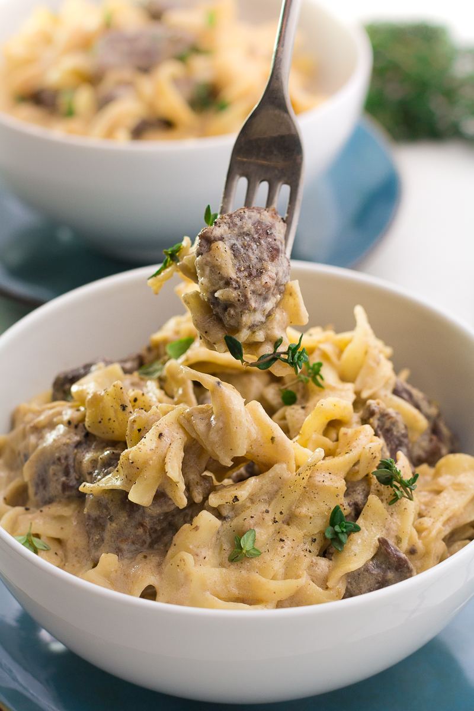

Crock Pot Beef Stroganoff

Decription
Get excited for this simple yet elevated, mouthwatering Crock Pot Beef Stroganoff Recipe! With beef, seared and slow cooked in a creamy gravy to savory perfection, you will soon be enjoying this Stroganoff with a smile on your face.
Ingredients
- 1 cup milk
- 8 ounces cream cheese
- 2 cans cream of mushroom soup
- 1 16 ounce package egg noodles
- 1 lb beef stew meat Cut into bite sized pieces, if not already in bite chunks
- 1 large onion
- 1 tsp garlic salt
- 4 Tbs Worcestershire sauce
Instructions
- Start by chopping up your onion, and putting it in fry pan with your stew meat.
- Season with the garlic salt
- Cook just until the onion starts to get translucent and meat is browned on outside, but not cooked through.This will help keep the meat moist while it cooks in the crock pot. You can skip this and just dump everything into the crock pot, but it won't be as moist and tender when it is done. Taking a few minutes to brown the meat helps a lot.
- In a separate bowl, mix together milk, mushroom soup, Worcestershire sauce, and cream cheese. Stir well so not too lumpy. (If adding in the sour cream and mushrooms, do that here)
- Put sauce mixture and meat and onions in crock pot, put lid on, and cook on low for 4-6 hours. You can stir occasionally.
- Just before finished, boil water and cook noodles according to package directions.
- When noodles are cooked through, and drained, stir into crock pot. Let sit about 5 minutes, then serve.
Information:
- Author: Rachael Yerkes
- Prep Time: 10 minutes
- Cook TIme: 4 hours
- Total Time: 4 hours 10 minutes
- Servings: 10
- Calories Per Servings: 625 kcal